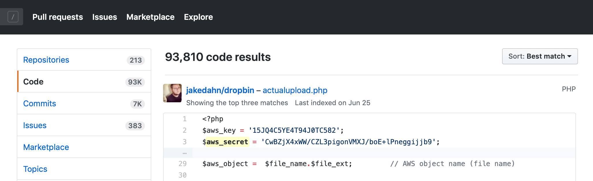

Защита программного обеспечения от уязвимостей – важный аспект для IT-индустрии. При проектировании систем или написании программного кода случаются ошибки, которые потенциально могут стать причиной брешей в безопасности. Они приводят к возможным утечкам строго конфиденциальной информации, потере доверия к программному продукту и финансовым убыткам. Для предотвращения подобных случаев в IT-отрасли регулярно появляются новые инструменты аудита, давно существуют и отлично описаны методики “безопасного” программирования. Казалось бы, следуй правилам и избежишь проблем, однако в процессе разработки ПО всегда существует пресловутый человеческий фактор.

Чем чревато игнорирование принципов безопасности при написании кода и какими материалами нужно пользоваться, чтобы снизить вероятность возникновения “косяков”? От проблем с безопасностью никуда не уйти. Регулярно обнаруживается, что на некоторых проектах разработчики вставляют в код или конфигурационные файлы пароли, токены, email-ы и другую секретную информацию.
Чем это чревато?
Основополагающий принцип обеспечения безопасности – злоумышленник знает о вашей системе столько же, сколько и вы. Не стоит считать, что к программному коду имеют доступ только разработчики. Во-первых, он где-то “хостится”, к нему имеют доступ администраторы source control системы. Во-вторых – он может запросто “утечь”: быть специально украден либо просто по неосторожности. Если это случится – злоумышленникам станет известно не только то, как работает приложение, но и с какими сервисами. И они смогут воспользоваться этой информацией: организовать списания с банковских карт, встроить bitcoin майнер к вам на сайт или воспользоваться вычислительными мощностями вашей инфраструктуры. Проблема не ограничена только лишь кодом – есть еще конфигурационные файлы, документация, примеры скриптов (привет, GitLab-у). Многие не видят опасности в том, что в репозитории исходных кодов помещен отдельный файл с конфигурацией, где используются те же ключи, логины и пароли с доступом к production-окружению или пусть даже к staging-окружению. Думать, что если они не в коде, то проблемы нет – не стоит.
Но катастрофы это – то, что случается не с нами…
И у нас в компании зарегистрировано несколько случаев, когда по счастливой неслучайности значимый кусок проекта попадал в публично доступные места (начиная с “расшареной” папки, заканчивая GitHub-ов и даже StackOverflow-ом). Ботам и автоматическим системам не составило труда быстро найти зашитые ключи и воспользоваться ими в своих целях, подставив нашего заказчика на много тысяч долларов. Урок был усвоен и пришло понимание – предотвратить проще, чем чинить. Как компания мы хотим видеть и контролировать то, насколько аккуратно и осознанно разработчики используют конфиденциальные данные. Инфраструктурные ключи, пароли и другая конфиденциальная информация часто принадлежит не нам, а заказчикам. Мы несем перед ним ответственность за сохранность такой информации.
А у нас паролей в коде нет, они все на проектной виртуалке
Точно, а пароль на виртуалку “стандартный”, чтобы всем “удобно” было. Доходит до смешного, пишем письма “Коллеги, уберите, пожалуйста, пароли из кода, настройте VM более безопасным способом”. В ответ лишь удивление “а что такого-то” и непонимание “так а где хранить тогда?”. Иногда приходится побыть “плохим парнем” и воспользоваться найденной информацией. Пара скриншотов production базы данных или shell-а от боевого окружения часто помогают немного больше письменных увещеваний. Вспоминайте пословицу про цепь и ее слабые звенья, не полагайтесь на security by obscurity.
Дайте доступ ко всему, у меня проектная необходимость
Пожалуйста, помните о принципе минимальной доступности. Если определенный доступ при необходимости выдается, то он должен содержать только необходимый набор разрешений. Это – основополагающий принцип обеспечения безопасности IT-систем. Именно поэтому операторы HelpDesk просят ответить на вопросы вида “к какой именно VM необходим доступ?” или “на какой срок необходим доступ?”.
Насколько все печально?
Проблема с “паролями в репозитории” оказалась достаточно распространена для того, чтобы был разработан инструмент для обнаружения хардкодов в нашем или стороннем Bitbucket репозитории, GitHub репозитории или даже на локальном диске. Все технические координаторы без труда могут воспользоваться сканером.
Как работает этот инструмент?
Эта штука сопоставляет энтропию строк и разные ключевые слова. В случае, если в одной строчке кода существует подстрока с большой энтропией (перемежаются символы разного регистра, спец. символы, цифры) и рядом есть ключевые слова (вида AWS, token, password), то велика вероятность, что строке есть “хардкод”. Результатом проверки является письмо техническому координатору с полным списком найденных проблем и просьбой отреагировать.
Один раз проверили и все?
В планах – разработка графического интерфейса с возможностью обработки “исключений” и ложных срабатываний. Система в постоянном режиме будет следить за тем, чтобы в коде наших проектов не встречались такого рода проблемы. Если вам известно, что в вашем ПО какие-то ключи можно найти в открытом виде в репозитории, пожалуйста, сообщите своему техлиду, техническому координатору, менеджеру или мне. Обязательно найдется более безопасный способ хранения чувствительной информации.
Так а как правильно-то?
Стоит руководствоваться документами, размещенными у нас на Confluence: Secure coding guidelines, Secure Software Development Life Cycle, рекомендациями OWASP, манифестом 12 Factor App и другими материалами. Если следовать им, то вероятность пострадать от уязвимостей уменьшается. При возникновении вопросов – обращайтесь к техническому координатору проекта.